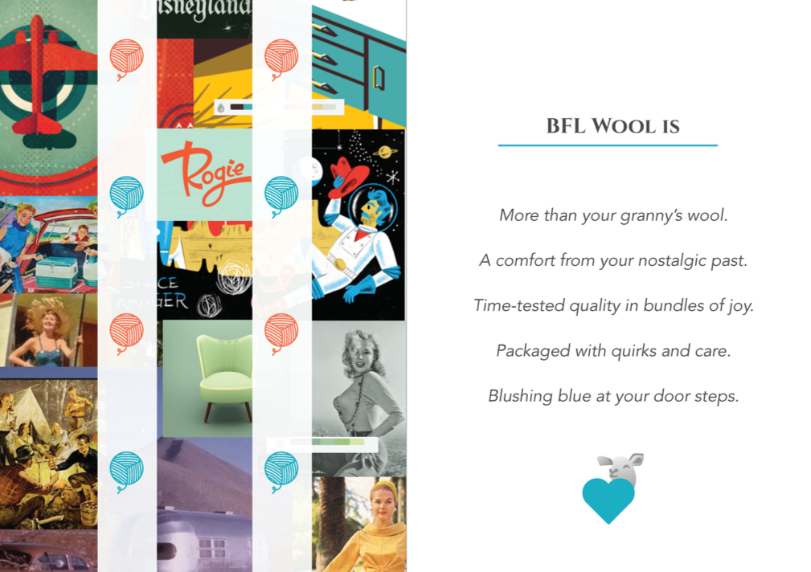

Blue-Faced Leicester Wool
a branding project
ONCE UPON A BRAND
As part of low-fidelity design work at General Assembly, I was asked to create a new brand for a hypothetical outdoors company, using only the following descriptor for inspiration:
“simple, reliable, aspirational, established”
Below is a deep dive on how (and why) I chose to brand wool. In particular, Blue Faced Leicester (BFL) wool, the best kind of wool you've never heard of.
research
Assuming there was even a market for wool took some competitive analysis. In my desire to understand the “outdoor gear” market, I did extensive secondary research by looking at price, product options, pitch, values, and partnerships. I took time to read about each companies' history in order to find common themes, values, imagery, even words, and any core message they wanted to establish with their consumers.
The more companies I looked into, the more categories I discovered. For example, most of the companies had some form of design philosophy, something I didn't realize was a staple in the market.
Some brands conveyed athleticism with bright colours, scenic photography, and vector images. Others focused on tradition with soft colours, photos of families, and use of serif font types. There was little overlap. I saw an opportunity to blend warm tones with vector imagery.
Competitor brands shared common attributes that I added as features to the BFL Wool brand:
- sustainable fabric
- community focus
- patriotic
- design philosophy
At this point, I discovered BFL wool, its Canadian history, and its high-quality features. Almost all of the leading quality brands researched were from Europe, despite the fact that Canada produces quality fabric and has a rich history doing so. Their brand story was predominately serious in tone. Moreover, most of the competitor products were marketed to adults. I saw an opportunity.
why not bring european standards to canadian youth markets?
The features of European brands combined with BFL wool's Nova Scotian history were the basis for a brand story on heritage that was authentic, patriotic, and new. I deliberately chose a fun and playful image as an opportunity to stand out and connect with younger audiences.
vision & mission statement
With a product in mind, and a good idea of where competitors stood, I went back to the descriptors of the hypothetical outdoors company to flesh out its vision and mission statement. These statements are important because they will be the base for making decisions on product and design features.
I had little to work with, so I took the synonyms of the descriptors to brainstorm ways to define the brand, highlighting words that answered the following question:
Which synonyms work well together to support what is already true about the product (its' Canadian history, quality wool, etc.)?
Then answering the following questions related to the descriptors:
What does it mean to be simple? In what ways is the [company, product] simple? What does it mean to be reliable?
Ultimately creating a statement that can guide the overall experience the users expect from the company.
The more authenticity the company presents through its brand and marketing → the more likely customers will feel a connection with the imagery the products are attempting to convey → the easier it is to design and build an experience to support that image
mood board & style guide
Each of the following mood boards reflects a subjective visual representation of terms that I want my brand to evoke. I gave myself little restrictions on what to look for or add to each board. One of the mood boards focused on minimal design, another focused on photography, another on textures, and so on.
kiss; keep it simple stupid
Despite enjoying the process of building each mood board, I struggled because each one was strong enough on its own. As a solution, I looked for one common theme within each mood board (like colour tones or specific designs) and allowed that theme to represent a component of the brand.
For example, the "50s feel" mood board shows rich and warm colours; a palette that would work well with my brand's "fun, playful" imagery. I added this as part of the style guide.
Looking at the mood board on photography, I realized younger generations may associate pictures of people wearing wool as unfashionable based on preconceived notions of whether wool is trendy. I decided to limit pictures until there was feedback on how receptive users would be to photography.
Images evoking: "50s feel". Inspired use of bright, warm, and soft colours in the style guide.
Images evoking: "fabric, humble, familiar, comfort". Inspired ideas on how to showcase wool on a web interface.
Images of "fabric, tradition, heritage". More logo inspiration, using a more minimal style.
colour
The shades of blue, orange, and green work in harmony to show warmth, familiarity, and fun. They were inspired by the rich, vibrant colours used in products in the 1950s and the sunsets on the coasts of Nova Scotia.

typography
I wanted to use a clear and minimal font that was versatile enough for written content (various weights) but clean and legible enough for showcasing products on all interfaces.
logo
Creating the logo was an extensive process. I looked at the fabric’s texture, the history of BFL wool, and the style guide for inspiration. It was difficult to pick just one style and refine it, since every style could lead to a new kind of logo. At some point, I needed to stop having fun.

Maybe letters like, "W" (from "Wool") could be a visual representation of the animal and word?
Maybe using shapes could be a modern representation of each word?
Maybe an emblem could represent heritage? Showing sheep could make for a playful logo?
I fell in love with some of these concepts but couldn't tie it together with the whole brand image. Letting go is hard.
I did user tests with a group of people to ultimately discover that none of these were great.
Inspired by icons, I used the idea of "yarn" to represent the background of the logo. I liked the idea of using an actual sheep to add character to the logo.
To balance the modern colours and vector style of the brand, I used a serif font, Cinzel.
I wanted the font to look good whether it's abbreviated or lengthen. I widened the space between the letters so it appears balanced next to the sheep icon.
ui elements
The UI elements took inspiration from the texture and style of wool. For example, the icons were inspired by how strings overlap each other, creating knots and shadows yet are simple and clean at its core. This helped define major features of the design system with illustrative and functional iconography. Eventually creating a fun and playful shopping visual experience with reactions to user inputs that are as playful as the brand.